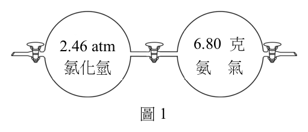
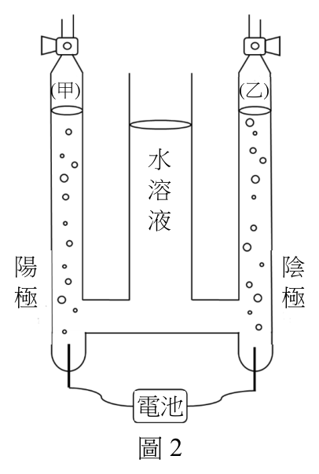
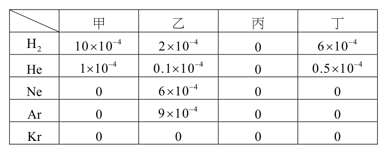
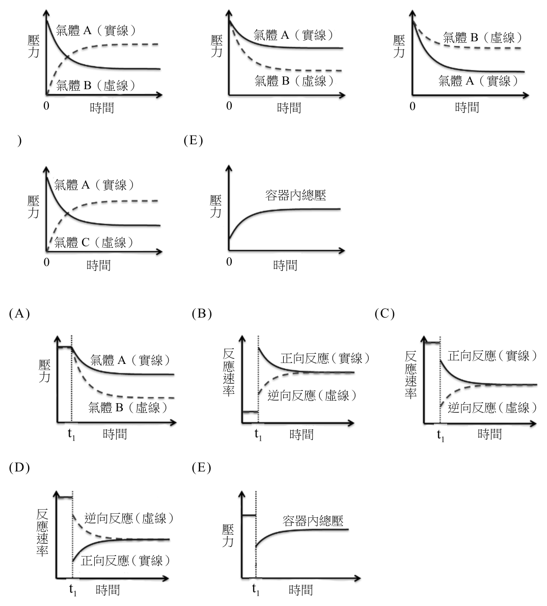
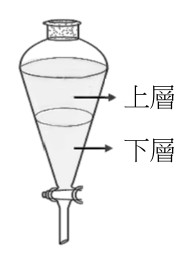
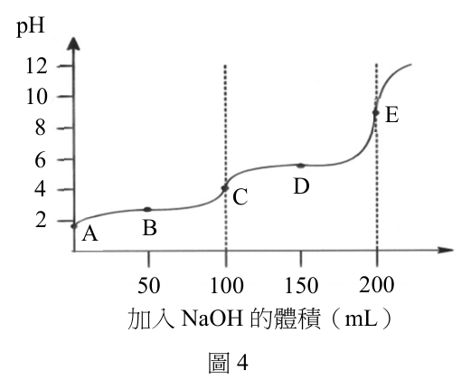
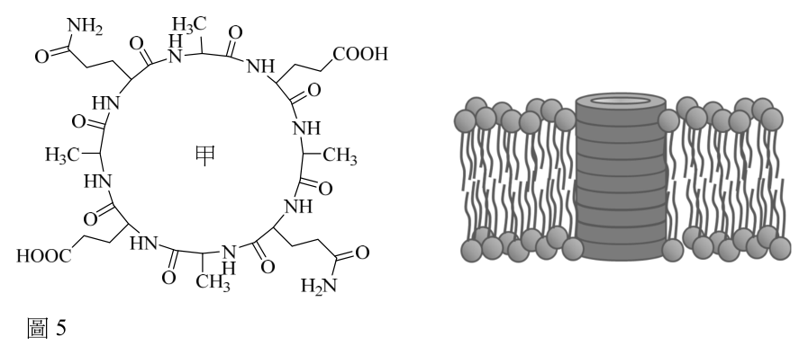
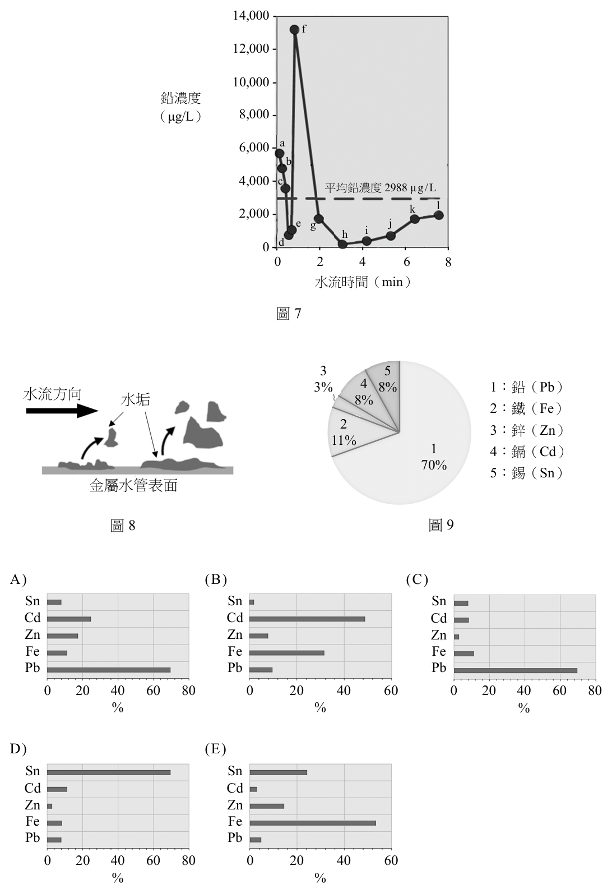
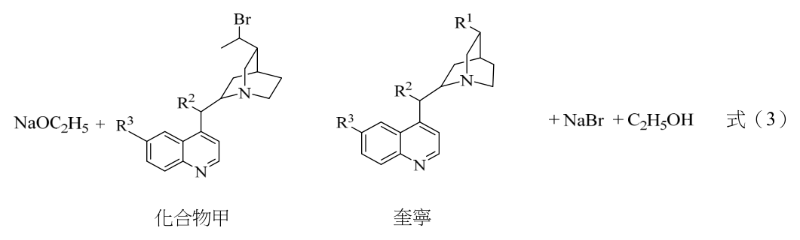

開卷有益 ／
分科測驗 ／ 化學 ／ 111 年111 年分科測驗化學試題與答案
這一頁是民國 111 年分科測驗化學的整份歷屆試題，共 28 題，題目與標準答案出自大考中心 分科測驗歷年試題（依著作權法 §9，考試試題不受著作權保護），其中 28 題附有詳解。以下逐題列出題幹、選項與答案；要計時作答或記錄成績，請用線上練習。
大學入學考試中心原始場次代碼：分科化學
線上作答這一科 →
全部 28 題
第 1 題
已知氨氣與氯化氫反應後,可生成固體的產物,其反應式如下:
NH 3 (g) + HCl (g) → N H 4 Cl( s )
假設有一裝置容器,左、右各是2.00 公升的球體,中間有一個氣體閥門(如圖
1)。在27°C,先將中間的氣體閥門關起來,在右邊球體內裝入6.80 克的氨氣,
在左邊球體裝入2.46 atm 的氯化氫氣體。置入氣體後,將左、右氣體閥門關閉,
再將中間氣體閥門打開,使左、右氣體完全混合且反應完全。假設氨氣和氯化氫
氣體皆為理想氣體,且反應前後溫度不變,生成的固體體積可忽略。上述實驗後,
容器內所剩的氣體與其壓力為何?

（A） 1.23 atm的氨氣（B） 2.46 atm的氨氣 2.46 atm 6.80 克
氯化氫 氨 氣（C） 3.69 atm的氨氣（D） 1.23 atm的氯化氫
圖1（E） 2.46 atm的氯化氫答案：（A）
詳解與考點 正解：反應前先換成莫耳數。n(NH3)=6.80 g/17.0 g/mol=0.400 mol；27°C=300 K，n(HCl)=2.46 atm×2.00 L/(0.0821 L atm mol⁻¹ K⁻¹×300 K)=0.200 mol。NH3與HCl以1:1反應，故HCl為限量試劑，剩餘n(NH3)=0.400 mol−0.200 mol=0.200 mol。混合後氣體佔4.00 L，P=0.200 mol×0.0821 L atm mol⁻¹ K⁻¹×300 K/4.00 L=1.23 atm，故選 A。
B：2.46 atm是起初HCl的壓力，不能直接當成反應後剩餘NH3的壓力；反應後體積已由2.00 L變為4.00 L。
C：3.69 atm不符合剩餘0.200 mol氣體在4.00 L、300 K下的理想氣體方程式。
D：HCl的初始莫耳數較少，已完全反應，不會以1.23 atm留在容器中。
E：同理，HCl是限量試劑，反應完全後其剩餘莫耳數為0 mol。
本題考點：限量試劑（limiting reagent）——先以平衡反應係數比較各反應物莫耳數，較先用盡者決定剩餘物；理想氣體方程式（ideal gas law）——壓力計算必須配合反應後實際氣相莫耳數、溫度與總體積；混合體積——打開閥門後，氣體可用的體積是兩球體體積之和。
實驗課時進行電解濃食鹽水的實驗,實驗設計是以碳棒做為電極。大部分的學生
實驗結果如圖2 所示,陰極與陽極皆會產生氣體,且甲管與乙管的液面高度大致
相同。
表1
(甲) (乙)
半反應式 E°(V)
水 O 2 (g) + 4H + + 4e − → 2H 2 O 1.229
溶 2 − − 2 − −
SO 4 + H 2 O + 2e → SO 3 + 2OH −0.936 液
陽 陰 NO 3 − (aq) + 2H + + e − → NO 2 ( g) + H 2 O 0.80 極 極 − −
Cl 2 (g) + 2e → 2Cl 1.36
Ag + (aq) + e − → Ag(s) 0.80
電池
圖2
111年分科 第 2 頁
化學考科 共 11 頁
但是,有五組的學生誤將其他鹽類當成食鹽配成水溶液進行電解實驗。誤拿的五
種鹽類,事後發現應為亞硫酸鈉、硝酸銀、氯化鉀、硫酸鎂、硝酸鈉。學生找資
料查到可能相關的標準還原電位數據,如表1 所示。根據以上結果,回答下列問
題。
第 3 題
在大部分學生正確使用濃食鹽水的結果中,甲管的氣體應為下列何者?

（A） 氫氣（B） 氧氣（C） 氮氣（D） 氯氣（E） 二氧化氮答案：（D）
詳解與考點 正解：濃食鹽水以碳棒電解時，甲管對應陽極；高濃度Cl⁻在陽極失去電子，半反應為2Cl⁻→Cl2(g)+2e⁻，因此甲管收集到氯氣。陰極則由水還原產生H2，兩管液面高度相近也符合兩端各產生氣體的觀察，故選 D。
A：氫氣是陰極還原水所產生的氣體，不是陽極甲管的產物。
B：氧氣來自水在陽極氧化；在濃食鹽水中，Cl⁻氧化是本題指定的主要陽極反應。
C：系統沒有可生成N2的含氮反應物，氮氣不會是電解產物。
E：NO2需要硝酸根相關反應物；濃食鹽水的陰、陽離子不提供此來源。
本題考點：電解池（electrolytic cell）——陽極發生氧化、陰極發生還原，先用電極位置判斷半反應；氯鹼反應（chlor-alkali electrolysis）——濃食鹽水的陽極主要生成Cl2，陰極主要生成H2與OH⁻；半反應配平（half-reaction balancing）——以電子數檢查氧化與還原式是否相符。
第 4 題
五組拿錯鹽類的學生中,有兩組學生很快就發現不對,因為在兩個集氣管中,有
一管一直都沒有氣體產生,則他們所使用的鹽類分別為何?
（A） 亞硫酸鈉、硝酸銀（B） 硝酸銀、氯化鉀（C） 氯化鉀、硫酸鎂（D） 硫酸鎂、硝酸鈉（E） 硝酸鈉、亞硫酸鈉答案：（A）
詳解與考點 正解：一個集氣管始終無氣體，表示某電極的較易反應物被還原或氧化成非氣體。亞硫酸鈉在陽極可使SO3²⁻氧化為SO4²⁻，不放出氣體；硝酸銀在陰極由Ag⁺還原析出Ag(s)，也不放出氣體。兩種溶液的另一電極仍可由水反應產生氣體，故選 A。
B：硝酸銀符合一端析銀不產氣，但氯化鉀在水溶液電解時可在兩端形成氣體，不能列入。
C：氯化鉀可生成H2與Cl2；硫酸鎂主要由水在兩端反應而有H2與O2，皆非一端始終無氣。
D：硝酸鈉的陰極可由硝酸根還原產生NO2(g)，陽極產生O2，因此兩集氣管均有氣體，不符合「一直無氣體」的條件。
E：亞硫酸鈉符合條件，但硝酸鈉不符合；一組中必須兩種鹽都各有一端不產氣。
本題考點：競爭電極反應（competing electrode reactions）——水、陰離子與金屬陽離子會競爭在電極放電，需比較可能的半反應；電解產物（electrolysis products）——Ag⁺在陰極析成固體，SO3²⁻在陽極可氧化成SO4²⁻，兩者都不必產氣；氧化還原半反應（redox half-reactions）——先分別判斷陽極與陰極，再決定是否有氣體進入集氣管。
甲、乙、丙、丁為四種具有孔洞的特殊大分子,其孔洞的內部可以吸附氣體。已
知其莫耳質量分別為1000、1100、1200、1300(g/mol),均具有單一孔洞且孔洞 內總體積相同,但孔洞的口徑大小不同。氣態物質可經由孔洞進入這些特殊大分
子內滯留,因此它們具有儲存氣體的特性。在同溫(200°C)、同壓下, H 2 、He、 Ne、Ar 及Kr 進入甲、乙、丙、丁的莫耳數比例不同,其平衡常數K 如表2 所 示。以氫氣進入甲分子的平衡常數為例,可表示如下:
nH 2 @ 甲 H 2 + 甲 H 2 @ 甲 K=
PH 2 × n甲
nH 2 @ 甲:含 H 2 分子的甲之莫耳數,n甲:未含 H 2 分子(空)的甲之莫耳數, PH 2 :氫氣的壓力(atm)。
表2:K( atm−)1
甲 乙 丙 丁
H 2 10 × 10− 4 2 × 10− 4 0 6 × 10− 4 He 1 × 10− 4 0.1 × 10− 4 0 0.5 × 10− 4 Ne 0 6 × 10− 4 0 0
Ar 0 9 × 10− 4 0 0
Kr 0 0 0 0
根據上述結果回答下列問題:
第 5 題
甲、乙、丙、丁四種分子上孔洞的口徑,最可能的相對大小為何?

表2：K（atm⁻¹） 氣體 甲 乙 丙 丁 H₂ 10 × 10⁻⁴ 2 × 10⁻⁴ 0 6 × 10⁻⁴ He 1 × 10⁻⁴ 0.1 × 10⁻⁴ 0 0.5 × 10⁻⁴ Ne 0 6 × 10⁻⁴ 0 0 Ar 0 9 × 10⁻⁴ 0 0 Kr 0 0 0 0
（A） 甲>乙（B） 乙>丙（C） 丙>丁（D） 丁>乙（E） 丙>甲答案：（B）
詳解與考點 正解：判準是各孔洞能否讓哪些氣體進入，而不是把同一列的 K 數值直接當成孔徑大小。乙對 H₂、He、Ne、Ar 的 K 均非 0，能讓的氣體種類比丙多；丙對五種氣體的 K 都是 0，表示在這些條件下沒有氣體進入。由兩者的可進入範圍可判斷乙的孔徑大於丙，故選 B。
A：甲只對 H₂、He 有非 0 的 K，乙還可讓 Ne、Ar 進入；以可進入氣體的範圍判斷，甲不會大於乙。
C：丙的五個 K 值皆為 0，丁至少可讓 H₂、He 進入；丙的孔徑不能大於丁。
D：丁可進入的氣體只有 H₂、He，乙則多了 Ne、Ar；K 的大小不必隨孔徑單調增加，但是否能進入已顯示丁不會大於乙。
E：丙沒有任何列出的氣體可進入，甲可讓 H₂、He 進入；因此丙不會大於甲。
本題考點：分子篩效應（molecular sieving）——比較孔徑時先看各氣體能否通過，能通過較大分子的孔徑較大；吸附平衡常數（adsorption equilibrium constant）——K 反映指定氣體與孔洞的平衡，判孔徑時要連同「是否為 0」的進入範圍一起判讀。
第 6 題
取甲分子1000 克,於200°C下通入氫氣,達到平衡時,氫氣的壓力為1000 atm,
則含有 H 2 的甲莫耳數( nH 2 @ 甲)為何(mol)?
表2：K（atm⁻¹） 氣體 甲 乙 丙 丁 H₂ 10 × 10⁻⁴ 2 × 10⁻⁴ 0 6 × 10⁻⁴ He 1 × 10⁻⁴ 0.1 × 10⁻⁴ 0 0.5 × 10⁻⁴ Ne 0 6 × 10⁻⁴ 0 0 Ar 0 9 × 10⁻⁴ 0 0 Kr 0 0 0 0
（A） 0.875（B） 0.75（C） 0.5（D） 0.375（E） 0.125答案：（C）
詳解與考點 正解：甲的單一孔洞只有空孔與含 H₂ 兩種狀態，且表中 H₂ 對甲的 K 為 10×10⁻⁴ atm⁻¹。甲分子的總莫耳數 = 1000 g / (1000 g/mol) = 1.00 mol。由定義式可得 n(H₂@甲) / n(空甲) = K×P(H₂) = (10×10⁻⁴ atm⁻¹)×(1000 atm) = 1。故 n(H₂@甲) = n(空甲)，並有 n(H₂@甲) + n(空甲) = 1.00 mol，所以 n(H₂@甲) = 0.500 mol，故選 C。
A：若 n(H₂@甲) = 0.875 mol，則 n(空甲) = 1.000 mol − 0.875 mol = 0.125 mol，比例為 0.875 / 0.125 = 7，不符合 K×P(H₂) = 1。
B：若 n(H₂@甲) = 0.750 mol，則 n(空甲) = 1.000 mol − 0.750 mol = 0.250 mol，比例為 0.750 / 0.250 = 3，不符合平衡比為 1 的條件。
D：若 n(H₂@甲) = 0.375 mol，則 n(空甲) = 1.000 mol − 0.375 mol = 0.625 mol，比例為 0.375 / 0.625 = 0.6，不符合平衡比為 1 的條件。
E：若 n(H₂@甲) = 0.125 mol，則 n(空甲) = 1.000 mol − 0.125 mol = 0.875 mol，比例為 0.125 / 0.875 = 1/7，不符合平衡比為 1 的條件。
本題考點：吸附平衡常數（adsorption equilibrium constant）——先把 K 與氣體壓力相乘，得到含氣體的甲分子莫耳數與空甲分子莫耳數的比；莫耳守恆（mole balance）——單一孔洞的兩種狀態相加等於甲分子的總莫耳數；量綱分析（dimensional analysis）——atm⁻¹ 與 atm 相乘後無單位，才可作為莫耳數比。
第 7 題
近年來,由於新型冠狀病毒在全球各地肆虐,耳溫槍已成為重要的防疫工具。耳
溫槍是以量測鼓膜溫度來代表人體的體溫,假若人體鼓膜的輻射能量主要處於
6000~15000 nm 之間,則試問氫原子中的電子在下列哪一種主量子數n 之間的
躍遷,所釋出的電磁波能量與人體鼓膜的輻射能量最接近?(芮得柏方程式:
1 1 1 − 2 − 1
> 1n ,芮得柏常數 R H 約為 1.0 × 10 nm ) = R H ( 2 − 2 ) , n 2
λ n 1 n 2
（A） n=2 → n=1（B） n=3 → n=2（C） n=4 → n=3（D） n=5 → n=4（E） n=6 → n=5
二、多選題(占48分)答案：（E）
詳解與考點 正解：先把耳溫槍可量測的6000–15000 nm換成6.0×10⁻⁶–1.5×10⁻⁵ m。對n=6→n=5，1/λ=(1.0×10⁷ m⁻¹)×(1/5²−1/6²)=(1.0×10⁷ m⁻¹)×11/900=1.22×10⁵ m⁻¹，所以λ=8.18×10⁻⁶ m=8180 nm，落在題設範圍內，故選 E。
A：n=2→n=1的波長約133 nm，屬紫外區，遠小於6000 nm。
B：n=3→n=2的波長約720 nm，接近可見光範圍。
C：n=4→n=3的波長約2060 nm，雖為紅外線，仍小於6000 nm。
D：n=5→n=4的波長約4440 nm，尚未進入題設的6000–15000 nm區間。
本題考點：芮得柏方程式（Rydberg formula）——先以1/λ計算波數，再取倒數求波長；單位換算（unit conversion）——1 m=10⁹ nm，應在最後統一換算；氫原子能階（hydrogen energy levels）——相鄰高能階躍遷的能量差較小，放出的波長較長。
第 8 題 （多選）
下列有關分子結構與特性的敘述,哪些正確?
（A） SO 3 與 NH 3 皆具有偶極矩（B） 氣態 BeH 2 與 H 2 S皆為直線型分子（C） 光氣( COCl 2 )為一具極性的平面分子（D） NO 2 的價電子總數為奇數,故其路易斯結構不符合八隅體規則（E） 穩定態的 SF6 為正八面體結構,但因為S和F原子電負度不同,故 SF6 具有偶極矩答案：（C）（D）
詳解與考點 正解：共同判準是先用價電子數與 VSEPR 判斷分子形狀，再看各鍵偶極是否因對稱而抵銷。光氣的三角平面結構因 C=O 與 C-Cl 的偶極不互相抵銷而有極性；NO₂共有17個價電子，含有未成對電子，無法讓所有原子同時遵守八隅體規則，故選 CD。
C：COCl₂ 的中心碳周圍有三個電子域，分子為平面三角形；C=O 與兩個 C-Cl 鍵的偶極向量不會完全抵銷，所以是具極性的平面分子。
D：NO₂ 的價電子數為 N 的5個加上兩個 O 的12個，共17個。奇數價電子使其路易斯結構必有未成對電子，不能讓所有原子都同時滿足八隅體。
A：SO₃ 雖有極性 S-O 鍵，但三角平面且對稱，鍵偶極互相抵銷，分子偶極矩為0；NH₃ 才是具偶極矩的分子，故不能說兩者皆有。
B：氣態 BeH₂ 是直線型，但 H₂S 的中心硫有兩對孤電子對，分子形狀為彎曲型，兩者不都是直線型。
E：SF₆ 是對稱的正八面體。各 S-F 鍵雖有鍵偶極，但六個方向的向量總和為0，分子沒有偶極矩。
本題考點：VSEPR 理論（valence shell electron pair repulsion theory）——先數中心原子的鍵結與孤電子對，再判斷分子形狀；分子偶極矩（molecular dipole moment）——有極性鍵不必然有分子極性，還要看向量是否被對稱結構抵銷；八隅體規則（octet rule）——價電子總數為奇數時，常需辨認未成對電子與例外結構。
將同溫、同壓、同體積的氣體A 與氣體B 共同置入一體積為V 之密閉容器內,
已知A 與B 會發生化學反應產生氣體C,化學平衡反應式為2A(g) + B(g) 2C(g), 回答下列問題:
第 10 題 （多選）
上述反應達平衡後,於時間 1t 時,在定溫下將容器體積瞬間變成2V,則下列關係
圖哪些正確?

（A） （B） （C） 氣體A(實線) 反 正向反應(實線) 反 正向反應(實線)
壓 應 應
力 速 速 逆向反應(虛線)
率 率 氣體B(虛線) 逆向反應(虛線)
時間 時間 時間（D） （E） 逆向反應(虛線) 容器內總壓 反
應 壓
速 力
率 正向反應(實線)
時間 時間答案：（D）（E）
詳解與考點 正解：反應式 2A(g)+B(g)⇌2C(g) 由左向右的氣體莫耳數減少 1；在 1t 將體積瞬間加倍時，各分壓先同時減半。此時 Qp'=(PC/2)^2/[(PA/2)^2(PB/2)]=2Kp，大於 Kp，故平衡向左移，逆反應暫時較快。這裡不能僅由總反應式推出正、逆反應速率的精確倍數。故選 DE。
D：正、逆反應速率在原平衡時相等；體積改變後系統因 Qp'>Kp 向左移，逆反應暫時較快，直到新平衡再度相等。
E：總壓在體積加倍瞬間下降，接著因向左移使總氣體莫耳數增加而部分回升；新平衡壓仍受較大體積影響。
A：若圖示未讓各氣體分壓在體積改變的瞬間同倍縮小，便不符合定溫下 P=nRT/V 的直接結果。
B：平衡受擾後，正、逆反應速率不會維持相等；分辨關鍵在 Qp' 與 Kp 的比較，而不是把總反應式的化學計量係數直接當成反應級數。
C：把反應判為正向較快會使 Qp 回到 Kp 的方向相反；Qp 大於 Kp 時應優先進行逆反應。
本題考點：反應商與平衡常數（reaction quotient）——先把擾動後的分壓代入 Qp，再以 Qp 與 Kp 的大小判移動方向；反應速率與速率式——只有在題目給出速率式或基元反應假設時，才能計算濃度改變後的速率倍數，不能直接把總反應式係數當作反應級數；體積擾動——氣體平衡遇膨脹時，優先判向氣體莫耳數較多的一側移動。
第 11 題 （多選）
王同學用乙醇與過量的醋酸進行酯化反應,反應完成後,利用萃取法將醋酸與產
物分離。依序將水、乙醚加入至反應完成的混合液中,再倒
入分液漏斗內,如圖3 所示。下列有關此反應與萃取過程的
敘述,哪些正確? 上層

（A） 分液漏斗中的上層為水層
下層（B） 醋酸是有機物,但還是會溶於水層中（C） 實驗過程中所加的乙醚,可以用丙酮取代（D） 乙酸乙酯與乙醚可互溶,故用乙醚進行萃取 圖3（E） 加入少量的濃硫酸,有助於此酯化反應的進行答案：（B）（D）（E）
詳解與考點 正解：判準是萃取劑須與水不互溶又能溶解產物，且酯化反應以酸催化。乙醚密度小於水，會與乙酸乙酯同在有機上層；醋酸雖是有機物，因含羧基而能溶於水層。故選 BDE。
B：醋酸具有極性羧基，能和水形成作用力，因此雖屬有機物，仍可分配到水層。
D：乙酸乙酯與乙醚互溶，乙醚可把產物帶入有機層，達到和水層中醋酸分離的目的。
E：濃硫酸提供酸性催化環境，可促進酯化反應進行。
A：乙醚的密度小於水，上層應是以乙醚與乙酸乙酯為主的有機層，不是水層。
C：丙酮可與水互溶，無法像乙醚一樣建立清楚的水層與有機層，不能取代為此萃取劑。
本題考點：液液萃取（liquid-liquid extraction）——選萃取劑時，同時檢查與水是否不互溶及與目標物是否互溶；酯化（esterification）——酸催化可加快反應，產物與未反應酸的分層行為可用來設計分離。
第 12 題 （多選）
以0.10 M NaOH 溶液滴定200 mL 0.050 M 之某有機酸溶液,其滴定曲線如圖4
所示。下列關於此有機酸的敘述,哪些正確?

（A） K a1 大於 10− 4 pH（B） 此有機酸為單質子酸 12（C） 在pH5.5附近有很好的緩衝效果 10
E（D） 當溶液的pH=10時,該有機酸呈帶 8
6 +1價離子
4 D C（E） 於上述有機酸溶液中加入0.10 M 2 A B
NaOH溶液100 mL時,溶液的pH值接
近7.0 50 100 150 200
加入NaOH 的體積(mL)
圖4答案：（A）（C）
詳解與考點 正解：滴定曲線的第一段緩衝區可讀出 pKa1 小於 4，因此 Ka1 大於 10^-4；而 pH=5.5 附近曲線平緩，表示弱酸與其共軛鹼可同時存在並有良好緩衝能力。故選 AC。
A：pKa1<4 等價於 Ka1>10^-4，這是由 pKa=-log Ka 直接換算得到的關係。
C：緩衝效果最佳處在 pH 接近該酸解離步驟的 pKa；曲線在 pH=5.5 附近平緩正是此判據。
B：曲線呈現不只一個酸鹼解離步驟的特徵，不能把此有機酸視為只有一個可解離質子的單質子酸。
D：pH=10 屬偏鹼環境，酸性基團傾向去質子化；帶正 1 價不符合此時的主要酸鹼型態。
E：100 mL 滴定劑對應的位置須依曲線的當量與緩衝區判讀，圖上所示 pH 不接近 7.0；不能僅以「加入一半體積」推成中性。
本題考點：pKa 與 Ka——遇到 Ka 的大小比較時，以 pKa=-log Ka 反向判讀；緩衝溶液（buffer solution）——曲線平緩且 pH 接近 pKa 的區域才有較佳緩衝；滴定曲線判讀——先找解離與當量特徵，再判斷加入特定體積後的酸鹼型態。
第 13 題 （多選）
「大象牙膏」是一有趣的化學實驗:將濃度為30~35%的雙氧水與清潔劑混合,
雙氧水分解產生的氧氣被清潔劑水溶液包裹住產生氣泡,此泡沫狀物質會像噴
泉一樣噴湧而出。已知其化學反應式為:
2H 2 O 2 (l) → 2H 2 O(l) + O 2 (g) Δ H1 =− 196 kJ / mol ,活化能 Ea 1 = 76 kJ / mol 。
若在此溶液中加入少量碘化鉀溶液,則泡沫噴湧的效果會更明顯。小安量測加入
碘化鉀溶液後的反應活化能 Ea 2 = 57 kJ / mol 與反應熱 Δ H 2 =− Q kJ / mol。此外,小安
發現加入碘化鉀溶液後,碘離子會參與反應,而且有甲、乙兩反應發生。
甲: H 2 O 2 (l) + I − (aq) → Y(aq) + H 2 O(l)
乙: H 2 O 2 (l) + Y(aq) → Z(aq) + H 2 O(l) + O 2 (g)
已知甲、乙兩個反應的反應係數皆已平衡,且甲反應的反應速率小於乙反應的反
應速率,小安分析反應後碘離子的量沒有減少。根據以上實驗觀察及結論,下列
敘述哪些正確?
（A） Q>196（B） Y是 IO 3 −（C） Z是I−（D） 甲反應活化能小於乙反應活化能（E） 雙氧水在此實驗中既是氧化劑,也是還原劑答案：（C）（E）
詳解與考點 正解：碘化鉀改變的是反應途徑，不改變反應物與生成物的能量差，所以ΔH2=ΔH1，Q=196。又碘離子在甲反應先被消耗、在乙反應後又回復，且只有甲、乙兩步時，乙的產物Z必為I⁻。H2O2中的氧化數為−1，生成H2O時變為−2、生成O2時變為0，故同時有被還原與被氧化的H2O2，故選 CE。
C：反應後I⁻的量不減少表示它是催化劑，必須在後續步驟再生，因此Z是I⁻。
E：同一種H2O2一部分還原成水、一部分氧化成氧氣，屬歧化反應，因而兼具氧化劑與還原劑角色。
A：催化劑降低活化能，卻不改變反應前後的焓差，所以Q不會大於196。
B：若Y為IO3⁻，在僅有兩步的機制中無法依所列乙反應直接再生I⁻並符合整體反應。
D：甲反應速率較小，表示它是較慢的步驟；在相同條件下，不能據此判為甲的活化能小於乙。
本題考點：催化（catalysis）——催化劑提供較低活化能的替代途徑，但不改變ΔH與平衡位置；催化循環（catalytic cycle）——催化劑可在某一步消耗、在後續步驟再生，總反應式中會消去；歧化反應（disproportionation）——同一元素由同一氧化數同時升高與降低時，該物質兼作氧化劑和還原劑。
第 14 題 （多選）
硫酸根離子濃度的檢測方法如下:首先加入適量的鹽酸使樣品溶液酸化,然後加
入氯化鋇溶液,會產生白色沉澱,稱重後即可確定樣品所含有硫酸根離子的量。
李同學取得一樣品,依照上述方法得到硫酸鋇沉澱,以預先稱重的濾紙過濾,並
將濾紙與沉澱物置於已稱重的坩堝內,於烘箱內烘乾,最後再稱沉澱物、濾紙與
坩堝的總重,可計算樣品中硫酸根離子的濃度。實驗完成後,發現所測得的結果
高於實際濃度,下列哪些可能是造成此誤差的原因?
（A） 最後稱重時,濾紙乾燥未完全（B） 樣品溶液中含有不溶的固體雜質（C） 在過濾的過程中,有粉末通過濾紙而流失（D） 尚未加入氯化鋇前,在操作過程灑濺出樣品（E） 空坩堝稱重前未完全乾燥,但最後稱沉澱物、濾紙與坩堝的總重時,則是完
全乾燥答案：（A）（B）
詳解與考點 正解：重量分析最後以「總重量減去預先稱得的濾紙與坩堝重量」推回硫酸鋇質量。凡是使最後秤得的殘留物多出水分或雜質，都會把硫酸鋇誤算得過多；故選 AB。
A：濾紙未完全乾燥時，殘留的水分會與硫酸鋇一同被計入最終重量，使計算出的沉澱質量偏大。
B：樣品中的不溶固體雜質會在過濾時和硫酸鋇一起留在濾紙上，若未先分離便會被誤當成沉澱的一部分，結果偏高。
C：粉末通過濾紙而流失，代表實際生成的硫酸鋇沒有全數被稱到，最後的沉澱質量會偏小。
D：加入氯化鋇前灑濺出樣品，留在容器中的硫酸根變少，能生成的硫酸鋇變少，測得濃度應偏低。
E：空坩堝初次稱重時尚有水分，初始坩堝重量會被高估；最終完全乾燥後再相減，會多扣掉重量，使沉澱質量偏低。
本題考點：重量分析（gravimetric analysis）——用可分離、可稱重的沉澱質量回推待測離子量，任何非沉澱物的重量都要排除；恆重（constant mass）——秤重前後均須乾燥至重量穩定，才能避免水分造成系統誤差；系統誤差（systematic error）——先判斷誤差使最終沉澱重量偏大或偏小，再推回濃度方向。
第 15 題 （多選）
小華在25°C時,將1 毫克的蛋白質分別加到10 mL 的純水、0.001 M 的鹽酸溶
液、0.001 M 的氫氧化鈉溶液中,得到如下的實驗結果:
(1)無法完全溶解於純水中
(2)完全溶解於0.001 M 的鹽酸溶液中
(3)完全溶解於0.001 M 的氫氧化鈉溶液中
(4)在電場下,(2)所述溶液中的蛋白質,會向負(-)端移動
(5)在電場下,(3)所述溶液中的蛋白質,會向正(+)端移動
根據上述,下列有關該蛋白質性質的推論哪些正確?
（A） 溫度越高,該蛋白質溶解度越大（B） 該蛋白質的溶解度和溶液酸鹼值有關（C） 該蛋白質所帶的電荷和溶液的酸鹼值有關（D） 若將(2)與(3)所述溶液等量混合,可能有部分蛋白質析出（E） 溶於0.001M氫氧化鈉溶液中的蛋白質,其移動速率不隨電場強弱而改變答案：（B）（C）（D）
詳解與考點 正解：同一蛋白質在酸、鹼溶液均可完全溶解，且酸中往負端、鹼中往正端移動，顯示 pH 改變了蛋白質的電離狀態與淨電荷。pH 也會改變接近等電點的機會，因而影響溶解度；故選 BCD。
B：蛋白質在純水不能完全溶解，卻在濃度為0.001 M 的鹽酸與濃度為0.001 M 的氫氧化鈉中完全溶解，直接顯示其溶解度會隨溶液酸鹼值改變。
C：酸性溶液中的蛋白質移向負端，表示它帶正淨電荷；鹼性溶液中移向正端，表示它帶負淨電荷，因此電荷與酸鹼值有關。
D：等量混合酸、鹼溶液後，pH 可能移向蛋白質淨電荷接近0的區域。此時粒子間的靜電排斥較弱，故可能有部分蛋白質析出。
A：實驗全在25°C 下進行，只比較不同酸鹼值，沒有改變溫度，不能由此推出溫度越高溶解度越大。
E：其他條件相同時，帶電蛋白質在較強電場中受力較大，遷移速率會隨電場強弱改變，不能說完全不受影響。
本題考點：等電點（isoelectric point）——蛋白質淨電荷接近0時，常較易聚集或析出；電泳（electrophoresis）——依移向正端或負端判斷粒子淨電荷，並比較不同 pH 的改變；酸鹼電離（acid-base ionization）——蛋白質側鏈可得失質子，使電荷與溶解性隨 pH 改變。
有甲、乙、丙、丁、戊、己等六個前三週期的元素,其相關的性質如表3 所示。 表3
元素 價電子數 電負度 原子半徑(pm)
甲 1 0.9 154
乙 5 3.0 75
丙 7 3.0 99
丁 6 3.5 73
戊 7 4.0 71
己 1 1.0 134
第 16 題 （多選）
根據表3 所提供的資料,下列有關此六個元素的敘述哪些正確?
元素 價電子數 電負度 原子半徑(pm) 甲 1 0.9 154 乙 5 3.0 75 丙 7 3.0 99 丁 6 3.5 73 戊 7 4.0 71 己 1 1.0 134
（A） 室溫下,甲可與甲醇反應（B） 乙的第一游離能小於丁的第一游離能（C） 室溫下,丙分子會與水進行氧化還原反應,而丁分子則不會（D） 丁可形成雙原子和三原子兩種氣體分子,其中三原子分子的鍵長較長（E） 室溫下,丙和戊均可形成同核雙原子分子,且戊分子的沸點比丙分子的沸點高答案：（A）（C）（D）
詳解與考點 正解：表中的價電子數、電負度與原子半徑可辨認出甲為Na、乙為N、丙為Cl、丁為O、戊為F、己為Li。Na可和甲醇反應生成甲醇鈉與H2；Cl2與水發生歧化反應，而O2不會有相同的室溫反應；O既可形成O2也可形成O3，O3的平均鍵級較低、鍵長較長，故選 ACD。
A：甲是鹼金屬Na，在室溫即可置換甲醇中的氫，形成甲醇鈉與氫氣。
C：Cl2在水中可生成HCl與HClO，氯同時被還原與氧化；O2在相同條件下不作這種反應。
D：O2的O−O鍵鍵級為2；O3的O−O鍵因共振而平均鍵級較低，所以三原子分子的鍵較長。
B：N的2p軌域為半充滿，較穩定；其第一游離能反而高於O，不是低於O。
E：F2與Cl2都為同核雙原子分子，但Cl2電子數較多、可極化性較大，沸點較高的應是Cl2。
本題考點：週期性質（periodic trends）——價電子數、電負度與原子半徑可交叉辨識元素在週期表的位置；第一游離能（first ionization energy）——比較相鄰元素時須留意半充滿與成對電子造成的例外；鍵級與鍵長（bond order and bond length）——鍵級降低通常使共價鍵變長。
第 17 題 （多選）
此六元素彼此之間可形成不同的化合物,下列相關化合物的敘述哪些正確?
元素 價電子數 電負度 原子半徑(pm) 甲 1 0.9 154 乙 5 3.0 75 丙 7 3.0 99 丁 6 3.5 73 戊 7 4.0 71 己 1 1.0 134
（A） 甲與丙可形成離子化合物（B） 乙與丁可形成多種化合物（C） 丁與戊形成的分子化合物中,丁的氧化數可為−1（D） 乙與丙形成的分子化合物,其分子形狀為平面三角形（E） 甲與丁可形成離子化合物,其中丁的氧化數可為−1或−2答案：（A）（B）（E）
詳解與考點 正解：由表可辨認甲、乙、丙、丁、戊分別為Na、N、Cl、O、F。金屬Na與非金屬Cl可經電子轉移形成離子化合物；N與O可依不同氧化數形成多種分子化合物；Na與O可形成氧化物或過氧化物，氧的氧化數分別可為−2或−1，故選 ABE。
A：Na失去價電子、Cl得到價電子，可形成NaCl這類離子化合物。
B：N與O可形成多種氮氧化物，兩元素的氧化數並非固定為單一組合。
E：Na2O中的O氧化數為−2；Na2O2中的每個O氧化數為−1，皆屬Na與O的離子化合物。
C：F在化合物中幾乎固定為−1，因此O與F的分子化合物中，O不會取−1的氧化數。
D：N與Cl形成的典型分子NCl3有一對孤電子對，分子形狀為三角錐形，不是平面三角形。
本題考點：離子與分子化合物（ionic and molecular compounds）——金屬與非金屬的電子轉移傾向形成離子化合物，非金屬間常形成共價分子；氧化數（oxidation number）——F在化合物通常為−1，過氧化物中的O則為−1；VSEPR理論（VSEPR theory）——中心原子的孤電子對會使三鍵加一孤對的構型呈三角錐。
長期濫用抗生素易使細菌產生抗藥性,細菌抗藥性產生的方式可透過本身的基因 突變或獲得抗藥性基因,因此開發新類型的抗生素是迫切的課題。有研究指出, 分子甲具有殺菌的作用,其結構如圖5 所示。
甲 =
圖5 圖6
第 18 題 （多選）
下列關於甲的組成與結構之敘述,哪些正確?

（A） 共有8個醯胺鍵（B） 僅由α-胺基酸組成（C） 所有的原子皆在同一平面上（D） 分子甲由8個胺基酸所構成（E） 分子甲由3種不同的胺基酸縮合而成答案：（B）（D）（E）
詳解與考點 正解：結構式的判準是逐一數胺基酸殘基、肽鍵連結與側鏈種類。甲由 8 個 α-胺基酸殘基縮合而成，側鏈可歸為 3 種，故肽鏈的殘基數與種類都應依結構逐一計數。故選 BDE。
B：各殘基的胺基與羧基皆接在同一個 α 碳上，符合 α-胺基酸縮合而成的肽鏈。
D：沿主鏈逐一計數可得 8 個胺基酸殘基；數殘基時要以每個 α 碳為一個單位。
E：比較各殘基的側鏈，重複者合併後共有 3 種不同胺基酸。
A：線性肽鏈若有 8 個胺基酸殘基，連結相鄰殘基的肽鍵為 7 個，不是把殘基數直接當成醯胺鍵數。
C：肽鍵附近雖因共振而近似平面，但 α 碳與多數側鏈具有立體構型，整個分子的所有原子不會共平面。
本題考點：肽鏈計數（peptide counting）——線性肽鏈的肽鍵數=胺基酸殘基數−1；α-胺基酸——從主鏈中胺基與羧基是否同接 α 碳判定；分子立體結構——局部肽鍵平面不等於整個多肽分子共平面。
第 19 題 （多選）
研究指出,甲產生殺菌的效果,是透過分子間的作用力,堆疊在細菌的細胞膜上
形成規律的結構,如圖6 所示。下列關於甲的性質與其堆疊結構物的敘述哪些正
確?
（A） 甲可形成分子間氫鍵（B） 甲可分別與丙酮、丙酸及丙炔產生氫鍵（C） 甲主要是藉由凡得瓦力互相堆疊（D） 堆疊後的結構物,可形成中空的通道（E） 甲的殺菌作用,可能是影響細菌細胞膜的功能答案：（A）（D）（E）
詳解與考點 正解：甲具有可提供與接受氫鍵的官能基，分子間能以具方向性的作用力規律排列；這種排列可形成中空通道，並可能擾亂細菌細胞膜的正常功能。故選 ADE。
A：甲含有可形成氫鍵的供體與受體，因此可形成分子間氫鍵。
D：規律堆疊後可留下中空通道，這是分子自組裝結構的重要特徵。
E：若堆疊結構在細胞膜上形成通道或改變膜的完整性，便可能影響膜的物質運輸與功能。
B：丙酮與丙酸具有可參與氫鍵的官能基，但丙炔不具高中化學中可形成氫鍵的適當供體或受體，因此不能說甲可分別與三者都形成氫鍵。
C：凡得瓦力普遍存在，但此規律堆疊的主要穩定作用是具方向性的分子間氫鍵，不能判為主要靠凡得瓦力。
本題考點：氫鍵（hydrogen bonding）——判斷能否形成氫鍵時，需同時檢查供體與受體，不可只看分子是否含氫；分子自組裝（molecular self-assembly）——具方向性的分子間作用力可形成規律與中空結構，進而改變膜功能。
某市因財政困難,停止使用自來水公司的供水系統,改為抽用河流的水,並停止 添加金屬腐蝕抑制劑。常用金屬腐蝕抑制劑為磷酸鹽的衍生物,溶於水中所產生 的磷酸根( PO 4 3 −)會與金屬水管腐蝕出的金屬離子形成難溶性鹽,即為水垢的 來源。水垢會附著於管壁表面,減緩金屬水管腐蝕的速度,進而降低水中重金屬 的含量。某研究團隊針對該水樣品中的金屬含量進行系統性的檢測,試圖找出水 中重金屬與過往的差異。回答下列問題:
第 20 題 （多選）
研究團隊於某住家中收集水樣品,固定水龍頭的出水流量為7.5 L/min,在8 分
鐘內,收集6 瓶1 公升的樣品a-f 及6 瓶250 毫升的樣品g-l,分析各樣品的鉛
濃度,結果如圖7 所示。根據上述,下列敘述哪些正確?(圖中的μg 為微克,
1 微克= 1 × 10− 6 克)(多選)
14,000
f
12,000
10,000
鉛濃度
(μg/L) 8,000
6,000 a
b
4,000 c 平均鉛濃度2988 μg/L
k l 2,000
e g j
h i
0 d
0 2 4 6 8
水流時間(min)
圖7

（A） 有4個樣品的鉛濃度高於平均鉛濃度（B） 樣品a-f的鉛濃度皆高於樣品g-l（C） 樣品a-f的鉛含量皆高於樣品g-l（D） 持續出水8分鐘後,可完全降低水中的鉛濃度（E） 若水樣品的密度為1 g/mL,有3個樣品的鉛濃度高於40 ppm答案：（A）（C）
詳解與考點 正解：圖中的平均鉛濃度為 2988 μg/L，逐點比較可得有 4 個樣品高於這條平均線；另須把濃度和含量分開，鉛含量 m=c×V，a-f 每瓶為 1 L，g-l 每瓶為 0.250 L，所以依圖中濃度與體積相乘後，a-f 的含鉛量皆較高。故選 AC。
A：高於 2988 μg/L 的資料點共有 4 個；平均線是本選項的直接判準。
C：含量不是只看 μg/L，必須乘樣品體積。1 L 是 0.250 L 的 4 倍，因此圖中部分濃度交錯不會改變此題的含量比較。
B：此敘述比較的是濃度而非含量，圖中 a-f 與 g-l 的濃度並非全部可作嚴格高低排序。
D：8 分鐘後的樣品仍有可測得的鉛濃度；濃度降低不等於完全去除。
E：密度為 1 g/mL 時，40 ppm=40 mg/L=40000 μg/L。圖中最高值未達此門檻，不能有 3 個樣品高於 40 ppm。
本題考點：濃度與含量——比較物質總量時一律用 m=c×V，不可只比濃度；平均值判讀——先以圖上的平均線逐點計數；ppm 換算——密度約 1 g/mL 的水溶液中，1 ppm 約等於 1 mg/L。
第 21 題
研究團隊認為重金屬的來源是附著水管壁上的水垢崩解後流入水中(圖8),水
垢中重金屬的含量分布如圖9 所示。假設分析水樣品的重金屬分布與水垢的重
金屬分布相同,試問下列何者為水樣品中的重金屬分布?(單選)
3 5
3% 4 8% 1:鉛(Pb) 水流方向 水垢 8%
2:鐵(Fe)
2 3:鋅(Zn)
11%
1 4:鎘(Cd)
70%
5:錫(Sn)
金屬水管表面
圖8 圖9
（A） （B） （C） Sn Sn Sn
Cd Cd Cd
Zn Zn Zn
Fe Fe Fe
Pb Pb Pb
0 20 40 60 80 0 20 40 60 0 20 40 60 80
% % %（D） （E） Sn Sn
Cd Cd
Zn Zn
Fe Fe
Pb Pb
0 20 40 60 80 0 20 40 60
% %答案：（C）
詳解與考點 正解：題幹指定水樣品與水垢的重金屬分布相同，因此條形圖必須同時呈現 Pb 為 70%、Fe 為 11%、Zn 為 3%、Cd 與 Sn 各為 8%。只有（C）同時符合五種金屬的名稱與比例。故選 C。
A：判讀分布圖不能只看最高的 Pb；其餘四種金屬的比例也必須同時與題幹一致，A 未滿足這組完整比例。
B：Pb 的 70% 是最具辨識力的數值，若最高柱未對應 Pb，便與資料不符。
D：Fe 為 11%、Zn 為 3% 的高低不可互換；比較兩者可排除 D。
E：Cd 與 Sn 都應為 8%，兩者同高是必要條件之一，但仍須兼顧 Pb、Fe、Zn 的其餘比例，E 不符合。
本題考點：百分比分布圖——先核對最大類別，再逐一核對其餘類別與總比例；圖表轉換——題幹給定成分百分比時，選項的類別名稱與柱高必須一一對應；濃度與組成——同一分布表示各成分的相對比例相同，不代表各樣品的總含量必然相同。
第 22 題
已知水垢中含有氫氧磷酸鉛( P b 5(PO 4 ) 3 OH )。式(1)為氫氧磷酸鉛在水中的溶
解平衡,若在水中添加含磷酸鹽的金屬腐蝕抑制劑後,是否能降低水中鉛濃度?
並說明之。(2 分)
5 Pb 2 + ( aq ) + 3 PO 4 3 − ( aq ) + OH − ( aq ) Pb 5 ( PO 4 ) 3 OH(s) 式(1)
是否能降低水中鉛濃度? 說明原因
本題選項為上圖中的 A／B／C／D，請對照圖片作答。
標準答案未收錄
詳解與考點 正解：題幹的關鍵訊號是「添加含磷酸鹽的金屬腐蝕抑制劑」，等於直接把式（1） 左側的 PO₄³⁻濃度拉高，所以判斷方向要用的規則是難溶鹽溶解平衡的同離子效應。式（1） 為 5Pb²⁺(aq) + 3PO₄³⁻(aq) + OH⁻(aq) ⇌ Pb₅(PO₄)₃OH(s)。以溶解方向 Pb₅(PO₄)₃OH(s) ⇌ 5Pb²⁺ + 3PO₄³⁻ + OH⁻ 的溶度積 Ksp = [Pb²⁺]⁵[PO₄³⁻]³[OH⁻] 來檢查：加入抑制劑後 [PO₄³⁻] 上升，離子積 Q = [Pb²⁺]⁵[PO₄³⁻]³[OH⁻] 隨之大於 Ksp，溶液成為過飽和而析出 Pb₅(PO₄)₃OH 固體；析出過程消耗 Pb²⁺，直到 Q 重新降回 Ksp，新的平衡濃度 [Pb²⁺] 比原來低。等價說法是式（1） 的平衡向右（生成固體）移動。析出的難溶鹽又附著成水垢覆蓋管壁，還會減緩金屬水管繼續腐蝕釋出鉛，兩個效果同向。故可作答「能。加入磷酸鹽使水中 PO₄³⁻濃度上升，離子積 Q 大於 Ksp，式（1） 平衡右移生成 Pb₅(PO₄)₃OH 沉澱，水中鉛離子濃度因而降低」。
本題考點：同離子效應（common-ion effect）——加入的試劑含有沉澱平衡式中的組成離子時，判平衡朝生成固體方向移動、另一組成離子濃度下降；離子積與溶度積比較（Q 對 Ksp）——先寫出 Q 再比 Ksp，Q > Ksp 即析出固體，這是「濃度會不會降」的量化判準，不必靠背誦結論。
具有相同滲透壓的溶液稱為等張溶液,細胞必須處於等張的環境才能存活,細胞 若處於滲透壓比細胞內大的高張溶液,則細胞會因為液體流出細胞外造成萎縮而 凋亡,高鹽分與糖分的醃製食品即是利用此一現象來進行食物保存。相反地,若 細胞處於滲透壓低於細胞內的低張溶液中,則可能會因液體流入細胞內使細胞膨 脹甚至破裂。回答下列問題:
第 23 題
已知有一單細胞細菌在27°C時,可存活於體積莫耳濃度0.25 M 的等張硝酸銨溶
液中。假設硝酸銨於水中完全解離,則此細菌細胞內的滲透壓為多少atm?(2
分)
標準答案未收錄
詳解與考點 正解：等張條件表示細胞內外的滲透壓相等；硝酸銨完全解離成 NH₄⁺ 與 NO₃⁻，每 1 mol 溶質形成 2 mol 粒子。先換算粒子濃度：0.25 mol/L × 2 = 0.50 mol/L。27°C = 300 K，因此 π = iMRT = 2 × 0.25 mol/L × 0.082 L·atm/(mol·K) × 300 K = 12.3 atm，故答 12.3 atm。
本題考點：滲透壓（osmotic pressure）——先把可解離溶質換成溶液中的粒子濃度，再代入 π = iMRT；等張溶液（isotonic solution）——比較的是總粒子造成的滲透壓，不是未解離前的莫耳濃度；溫度換算——代入氣體常數前，攝氏溫度必須先換成 K。
第 24 題
某生製備了一重量百分率濃度1.8%且密度為1.0 g/mL 的100 克葡萄糖(莫耳質
量為180 g/mol)水溶液,若在27°C下將上述單細胞細菌置於此溶液中,則此細
菌細胞變化如何?(需算出溶液濃度)(2 分)
標準答案未收錄
詳解與考點 正解：關鍵在外液葡萄糖不解離，必須先由重量百分率算出其粒子濃度，再與細胞內的 12.3 atm 比較。葡萄糖質量 = 100 g × 1.8% = 1.8 g；葡萄糖的莫耳數 = 1.8 g / 180 g/mol = 0.010 mol。溶液體積 = 100 g / 1.0 g/mL = 100 mL = 0.100 L，所以 c = 0.010 mol / 0.100 L = 0.10 mol/L。π外 = 1 × 0.10 mol/L × 0.082 L·atm/(mol·K) × 300 K = 2.46 atm，低於細胞內滲透壓，外液為低張，水會流入細胞使其膨脹，可能破裂，故答吸水膨脹，可能破裂。
本題考點：重量百分率濃度（mass percent）——先由溶液總質量求溶質質量，再以莫耳質量換成 mol；莫耳濃度（molarity）——分母要用由密度換得的溶液體積 L；低張溶液（hypotonic solution）——外液滲透壓較小時，水淨流入細胞。
現代的社會強調「資源可持續回復,循環再生」的循環經濟。鉛蓄電池因使用量
非常龐大,環保署公告2020 年回收的廢鉛蓄電池總處理量高達6 萬多公噸。而
廢鉛蓄電池中主要含金屬鉛(Pb)、氧化鉛(PbO)、二氧化鉛( PbO2 )、硫酸鉛
( PbSO 4 )。某研究團隊設計以下流程,可從廢鉛蓄電池中提煉高純度的PbO。
I. 將含有廢鉛蓄電池的廢料、濃度2.0 M 的 H 2SO4 、0.1 M 的 FeSO4 (在溶液中解 離成 Fe 2 +和 SO 4 2 −)溶液的混合物在65°C進行反應,所產生的 PbSO 4 可以式(2) 表示:
Pb(s) + PbO 2 (s) + 2H 2SO 4 (aq) → 2PbSO 4 (s) + 2H 2 O(l) 式(2) II. 將實驗I 的 PbSO 4 粗產物溶於10% NaOH 溶液,加熱,並趁熱過濾;待濾液
冷卻至室溫後,過濾並收集含PbO 的粗產物。
III. 將實驗II 的PbO 粗產物置於35% NaOH 溶液中,在110°C下攪拌至完全溶解
後趁熱過濾,靜置濾液使其冷卻至室溫,可得高純度的黃色物質即為PbO。
該研究團隊為探究 Fe 2 +在實驗I 中扮演的角色,利用鐵離子會與SCN−產生錯合物
的特性,又進行以下兩個實驗:
IV. 65°C時,於2.0 M 的 H 2SO4 與0.1 M 的 FeSO4 的水溶液中加入適量KSCN 水溶 液後,溶液幾乎無色;但是若加入少量 PbO2 後,溶液呈紅色,並有白色 PbSO 4
固體產生。
V. 取出實驗IV 的紅色溶液置於另一試管;在65°C時,加入鉛粉,溶液又變成
幾乎無色,且有白色 PbSO 4 固體產生。
回答下列問題:
第 25 題
實驗III 使用何種純化技術提煉PbO?(2 分)
標準答案未收錄
詳解與考點 正解：題眼在實驗 III 的操作序列——「35% NaOH 溶液、110°C 攪拌至完全溶解 → 趁熱過濾 → 靜置冷卻至室溫 → 得黃色 PbO」，這組「高溫溶解、趁熱濾除不溶物、降溫析晶」連著出現，就是再結晶的標準流程。判斷依據是溶解度隨溫度的變化：PbO 在高溫濃鹼液中溶解度大，在室溫時溶解度小，冷卻後溶液對 PbO 過飽和而結晶析出；不溶性雜質在趁熱過濾那一步被濾掉，可溶性雜質則因為未達飽和而留在母液中不隨晶體析出，兩段一起把純度提上去。要注意「趁熱過濾」只是流程中的一個動作，不是純化技術的名稱，答案要答整套方法。故可作答「再結晶法（重結晶，recrystallization）」。
本題考點：再結晶（recrystallization）——看到「加熱溶解、趁熱過濾、冷卻析晶」三個動作連續出現即判為再結晶，而非過濾、萃取或蒸餾；溶解度—溫度關係——判斷能否用再結晶純化，先看目標物與雜質的溶解度隨溫度差異夠不夠大。
第 26 題
寫出實驗IV 中,溶液呈紅色的原因為何?(2 分)
標準答案未收錄
詳解與考點 正解：題眼是實驗 IV 的對照——「加入 KSCN 後溶液幾乎無色，再加入少量 PbO₂後溶液呈紅色」，顯色前後唯一改變的變因是 PbO₂，所以要判斷的是氧化還原造成鐵氧化態改變，而不是濃度或酸鹼變化。原溶液中的鐵是 FeSO₄解離出的 Fe²⁺，Fe²⁺與 SCN⁻不生成有色錯合物，所以幾乎無色；加入 PbO₂後，PbO₂在 2.0 M H₂SO₄的酸性環境中是強氧化劑，把 Fe²⁺氧化成 Fe³⁺，自身的 Pb 由 +4 還原為 +2 並與 SO₄²⁻生成白色 PbSO₄沉澱——題述同時出現白色固體正好佐證這條路徑；生成的 Fe³⁺再與 SCN⁻形成血紅色錯合物 [Fe(SCN)]²⁺，溶液因此呈紅色。故可作答「PbO₂在酸性溶液中把 Fe²⁺氧化成 Fe³⁺，Fe³⁺與 SCN⁻結合成紅色錯合物 [Fe(SCN)]²⁺，故溶液呈紅色」。
本題考點：Fe³⁺與 SCN⁻的顯色反應——含鐵溶液由無色轉紅時，先判是否有 Fe²⁺被氧化成 Fe³⁺，紅色來自錯合物而非離子本身；PbO₂的強氧化性——酸性條件下 PbO₂會氧化共存的低氧化態離子、自身變成 Pb²⁺，可用同時析出的白色 PbSO₄當佐證訊號。
第 27 題
分別寫出實驗IV 與V 中生成 PbSO 4 的淨離子平衡反應式。(4 分)
標準答案未收錄
詳解與考點 正解：題眼是「淨離子平衡反應式」，代表只寫實際改變形態的物種與沉澱、略去旁觀離子，而且電子數、電荷、原子數三者都要平衡。實驗 IV：氧化劑是 PbO₂（Pb 由 +4 降為 +2，得 2 個電子），還原劑是 Fe²⁺（每個 Fe 由 +2 升為 +3，失 1 個電子），電子數要相等，所以 1 個 PbO₂配 2 個 Fe²⁺；酸性環境用 H⁺與 H₂O 補齊氫氧，生成的 Pb²⁺立刻與 SO₄²⁻結合成白色沉澱，故 SO₄²⁻不是旁觀離子、必須寫進式中：PbO₂(s) + 2Fe²⁺(aq) + 4H⁺(aq) + SO₄²⁻(aq) → PbSO₄(s) + 2Fe³⁺(aq) + 2H₂O(l)。電荷自檢：左側 (+4) + (+4) + (−2) = +6，右側 2 × (+3) = +6，相等；氧原子左側 2 + 4 = 6、右側 4 + 2 = 6，相等。實驗 V：加入的鉛粉是還原劑（Pb 由 0 升為 +2，失 2 個電子），Fe³⁺是氧化劑（2 個 Fe³⁺共得 2 個電子），生成的 Pb²⁺同樣與 SO₄²⁻生成 PbSO₄沉澱：Pb(s) + 2Fe³⁺(aq) + SO₄²⁻(aq) → PbSO₄(s) + 2Fe²⁺(aq)。電荷自檢：左側 (+6) + (−2) = +4，右側 2 × (+2) = +4，相等。故答案為上列兩式。
本題考點：半反應配平法（half-reaction method）——先讓氧化與還原兩半反應的電子數相等，酸性溶液再以 H⁺、H₂O 補齊氫與氧；淨離子方程式（net ionic equation）——判斷某離子是不是旁觀離子，看它反應前後有沒有進入沉澱或改變形態，本題 SO₄²⁻進入 PbSO₄故必須寫；電荷守恆自檢——配平後兩側總電荷必須相等，這是零成本的檢查動作。
人類很早就已經知道奎寧樹皮的萃取物可治療瘧疾,其作用的主要成分是奎寧,
別名金雞納霜或金雞納鹼,分子式為 C 20 H 24 N 2 O 2 ,可用於治療與預防瘧疾及治療 焦蟲症的藥物。奎寧化學結構如下圖所示,其中 R 1、 R 2 、 R 3 的結構並未標示出, 但小雅由文獻中得知 R 1 、 R 2 、 R 3 的結構共計含有3 個C、7 個H 與2 個O,並 可由以下實驗鑑定 R 1 、 R 2 、 R 3 所含的官能基。
(一)奎寧可由化合物甲與乙醇鈉( NaOC 2 H 5 )加熱而得,如式(3)所示。 (二)若將適當氧化劑與奎寧作用,可產生酮官能基的產物,分子式為 C 20 H 22 N 2 O 2 。 (三)若將奎寧加入氯化鐵溶液,此溶液未變為紫色。
回答下列問題:
式(3)
化合物甲 奎寧
第 28 題
畫出取代基 R 1 的結構。(2 分)

本題選項為上圖中的 A／B／C／D，請對照圖片作答。
標準答案未收錄
詳解與考點 正解：化合物甲在乙醇鈉加熱條件下轉為奎寧，這組條件對應由含鹵乙基前驅物進行消去反應而形成碳碳雙鍵。把取代基中的兩碳鏈轉成末端雙鍵後，與奎寧分子式所需的 C、H 數相符，因此 R1 為乙烯基，結構寫作 -CH=CH₂，故答 R1 = -CH=CH₂。
本題考點：消去反應（elimination reaction）——遇到鹼與加熱時，檢查相鄰碳是否可脫去 HX 形成 C=C；乙烯基（vinyl group）——連接母體的寫法為 -CH=CH₂，畫結構時要把雙鍵位置與連接端一併標出。
第 29 題
取代基 R 2 為何種官能基?(2 分)
本題選項為上圖中的 A／B／C／D，請對照圖片作答。
標準答案未收錄
詳解與考點 正解：題幹指出奎寧經適當氧化後由 C₂₀H₂₄N₂O₂變成 C₂₀H₂₂N₂O₂，分子少了 2 個 H 而 O 的數目不變，正是仲醇氧化為酮的變化。能提供此氧化位點的 R2 因而是羥基，且所在碳為仲碳，故答 R2 為羥基（仲醇）。
本題考點：醇的氧化（oxidation of alcohols）——仲醇失去 2 個 H 可形成酮，產物通常不增加 O 原子；分子式比較——先比較 C、H、O 的增減，再回推最可能發生的官能基轉換。
第 30 題
在實驗(三)中為何要加入氯化鐵溶液,其作用為何?(2 分)
本題選項為上圖中的 A／B／C／D，請對照圖片作答。
標準答案未收錄
詳解與考點 正解：氯化鐵溶液用來檢驗酚類羥基。酚羥基去質子化後可與 Fe³⁺形成具紫色特徵的錯合物；題幹記錄溶液未變紫色，表示奎寧不含可作此反應的酚羥基。這項檢驗可排除芳香環上為酚羥基的可能，故答檢驗是否含酚羥基；未變紫色表示不含酚羥基。
本題考點：氯化鐵試驗（ferric chloride test）——用顏色反應檢驗酚羥基，紫色結果支持酚類官能基；官能基鑑定（functional-group identification）——陰性結果也有判別力，可用來排除與其他含氧官能基混淆的結構。
其他年度
回到分科測驗化學的年度總覽 ，
或到分科測驗題庫首頁 看其他科目。
題目與標準答案出自大考中心 分科測驗歷年試題（依著作權法 §9，考試試題不受著作權保護）。依中華民國《著作權法》第 9 條第 1 項第 5 款，
依法令舉行之各類考試試題不得為著作權之標的，得自由利用。詳解為 AI 整理的學習輔助，
並非官方標準答案 ；中華民國會修訂，引用前請對照現行版本查證。